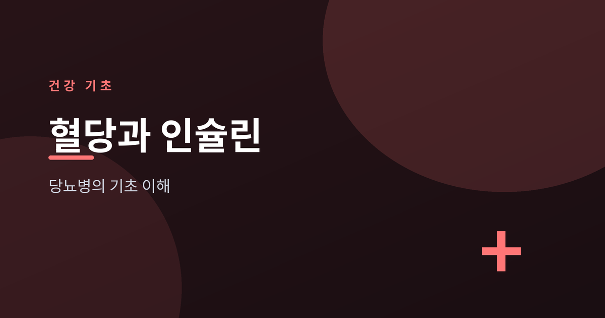
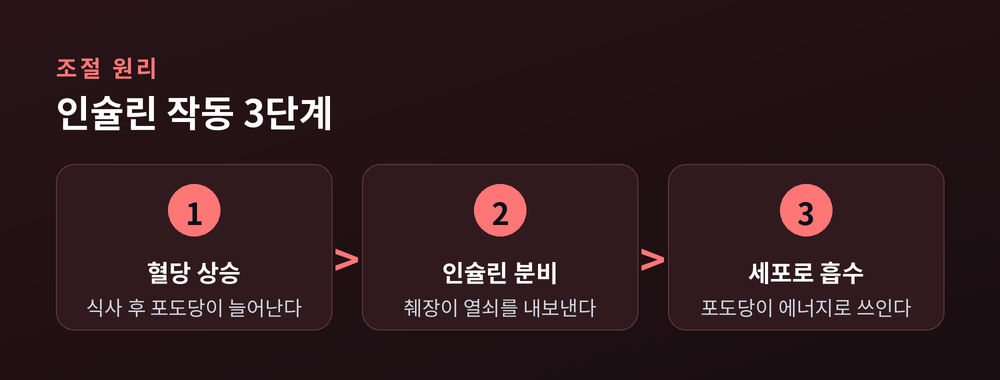
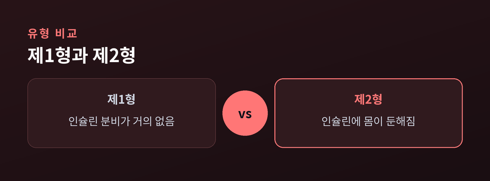
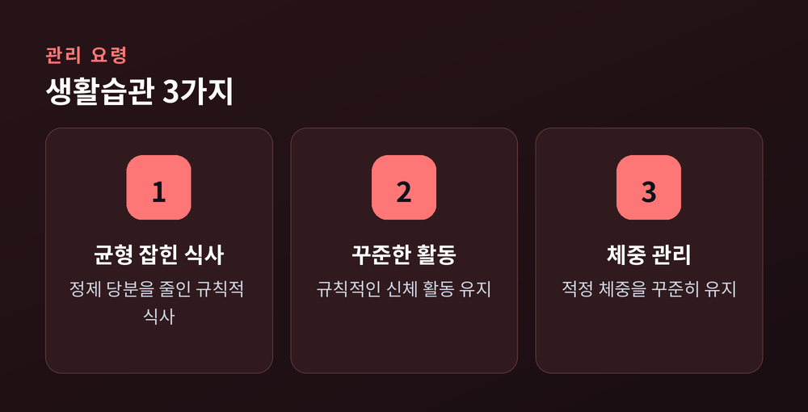

당뇨병의 기초 이해

이번 글에서는 혈당과 인슐린이 우리 몸에서 어떤 일을 하는지, 그리고 당뇨병이 왜 생기는지를 기초부터 정리해 보겠습니다. 어려운 의학 용어보다 큰 그림을 이해하는 데 초점을 맞추겠습니다.
혈당은 혈액 속에 녹아 있는 포도당을 말합니다. 우리가 먹은 밥이나 빵 같은 탄수화물은 소화를 거쳐 포도당으로 바뀝니다. 이 포도당이 혈액을 타고 온몸을 돌며 세포에 에너지를 공급합니다.
혈당은 너무 높아도, 너무 낮아도 곤란합니다. 우리 몸은 식사 뒤 오른 혈당을 일정한 범위로 되돌리려 애씁니다. 이 균형을 잡는 일이 건강 유지의 바탕이 됩니다.

혈당을 조절하는 핵심 일꾼이 인슐린입니다. 인슐린은 췌장에서 만들어지는 호르몬입니다. 식사 후 혈당이 오르면 췌장이 인슐린을 내보냅니다.
인슐린은 세포의 문을 여는 열쇠에 비유할 수 있습니다. 이 열쇠가 있어야 포도당이 세포 안으로 들어가 에너지로 쓰입니다. 덕분에 혈액 속 포도당은 줄어들고, 혈당은 다시 안정된 범위로 내려옵니다. 인슐린이 부족하거나 제 역할을 못 하면, 포도당이 세포로 들어가지 못한 채 혈액에 쌓입니다. 이것이 당뇨병의 뿌리입니다.

당뇨병은 크게 두 가지로 나뉩니다. 제1형은 인슐린을 만드는 췌장 세포가 손상되어 인슐린 자체가 거의 나오지 않는 경우입니다. 주로 어린 나이에 나타나며, 인슐린을 몸에 보충해 주어야 합니다.
제2형은 인슐린이 나오기는 하지만 몸이 인슐린에 둔해지는 경우입니다. 이를 인슐린 저항성이라 부릅니다. 열쇠는 있는데 자물쇠가 뻑뻑해진 상태에 가깝습니다. 성인에게 흔하며, 생활습관과 관련이 깊습니다.
| 구분 | 제1형 | 제2형 |
|---|---|---|
| 원인 | 인슐린 분비 부족 | 인슐린 저항성 |
| 발병 시기 | 대체로 젊은 나이 | 주로 성인기 |
| 관리 방향 | 인슐린 보충 필요 | 생활습관 관리 중심 |
특히 제2형은 일상의 습관이 큰 영향을 줍니다. 규칙적인 식사, 정제 당분을 줄인 식단, 꾸준한 신체 활동은 혈당 균형을 돕는 기본입니다.

예전에는 당뇨를 단지 '단것을 많이 먹어 생기는 병'으로만 여겼습니다. 지금은 유전, 활동량, 체중, 스트레스까지 여러 요인이 얽힌 문제로 이해합니다. 그래서 관리도 한 가지 방법이 아니라 생활 전반을 고르게 다듬는 방향으로 갑니다.
혈당 관리는 하루의 극적인 노력이 아니라, 꾸준한 습관의 누적으로 이루어집니다.
다만 이 글은 일반적인 건강 정보를 정리한 것입니다. 실제 진단과 치료, 약물 복용은 반드시 전문의와 상담하시길 권합니다.
혈당은 몸을 움직이는 연료이고, 인슐린은 그 연료를 세포로 들여보내는 열쇠입니다. 이 열쇠가 부족하거나 무뎌지면 혈당이 쌓이고, 그 양상에 따라 제1형과 제2형으로 나뉩니다. 완벽한 예방법이 있다고 단정하기는 어렵습니다만, 균형 잡힌 생활습관이 든든한 바탕이 된다는 점은 분명합니다. 내 몸의 신호에 귀 기울이는 일에서 건강 관리는 시작됩니다.